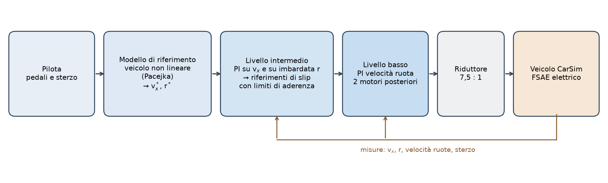
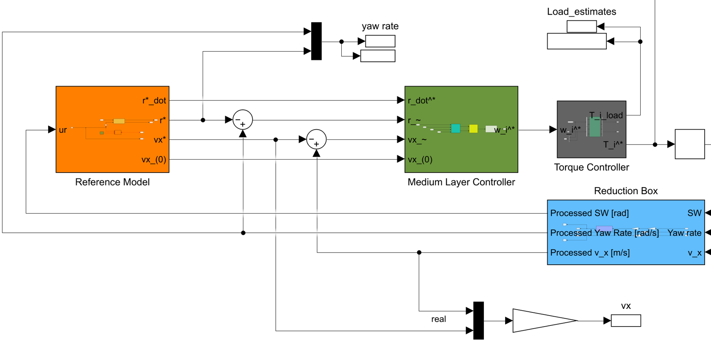
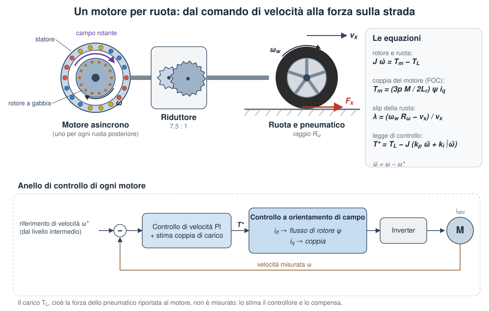
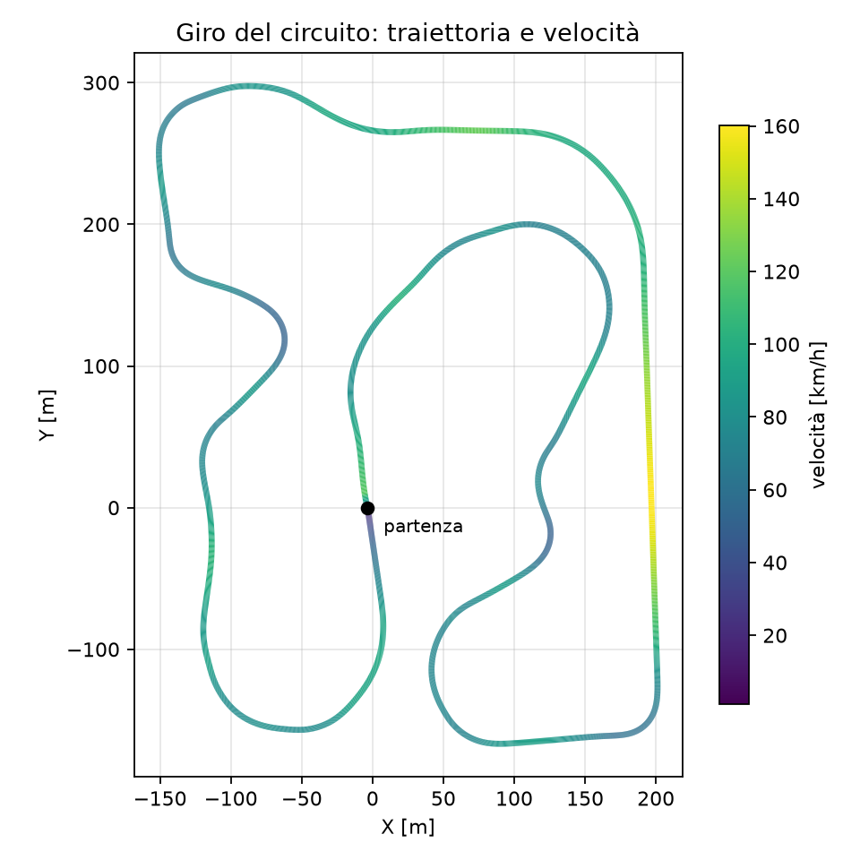
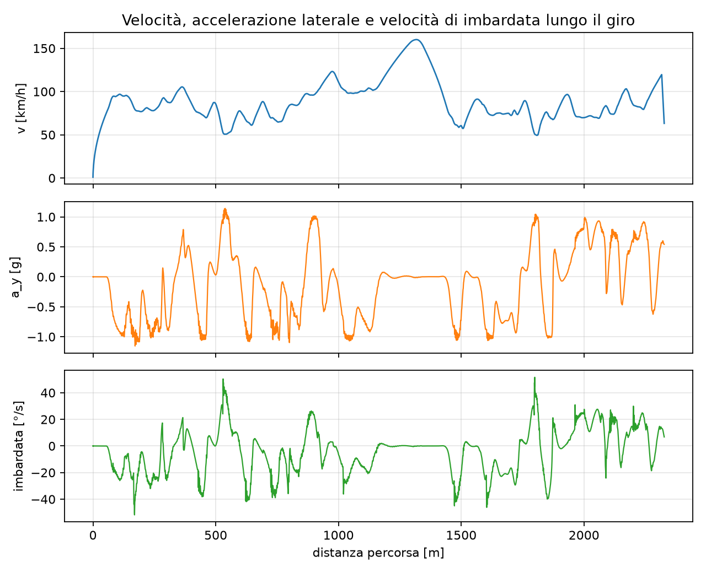

Il contesto
Una vettura elettrica con un motore per ruota non ha bisogno di un differenziale meccanico: la ripartizione della coppia tra ruota destra e sinistra la decide il software. Questo apre due possibilità. La prima è il controllo di trazione: limitare la coppia di una ruota quando inizia a slittare. La seconda è il torque vectoring: dare più coppia alla ruota esterna in curva per aiutare la vettura a ruotare, cioè controllarne la velocità di imbardata.
Il progetto mette insieme le due cose su una Formula SAE elettrica a trazione posteriore. Il veicolo è simulato in CarSim, che fornisce un modello multibody completo con sospensioni, pneumatici e pista in 3D. Il controllore gira in Simulink e comunica con CarSim a ogni passo tramite la S-Function di co-simulazione.
Il controllore a tre livelli
Il controllo è organizzato in modo gerarchico, dal comportamento voluto per la vettura fino alla coppia dei singoli motori:
- Modello di riferimento. Un modello di veicolo non lineare, con le forze laterali degli pneumatici descritte dalla formula di Pacejka, trasforma i comandi del pilota (pedali e angolo volante) nella velocità longitudinale e nella velocità di imbardata che la vettura dovrebbe avere.
- Livello intermedio. Due regolatori PI confrontano velocità e imbardata reali con quelle di riferimento e calcolano le azioni di controllo longitudinale e laterale. Queste vengono convertite in riferimenti di slip per le due ruote posteriori, saturati entro soglie che tengono le ruote nella zona di massima aderenza.
- Livello basso. Per ogni motore un regolatore PI sulla velocità della ruota, che tiene conto dell'inerzia della ruota, calcola la coppia da chiedere al motore, che arriva alla ruota attraverso un riduttore 7,5:1.
Un blocco stima inoltre la rigidezza di deriva e i carichi verticali sulle ruote, usati dal modello di riferimento, e il controllo di slip e quello di imbardata si possono attivare separatamente per confrontarne l'effetto.


Il motore e il suo controllo
Ogni ruota posteriore è mossa da un motore asincrono attraverso un riduttore. Nello statore tre avvolgimenti alimentati dall'inverter creano un campo magnetico rotante, che induce correnti nelle barre del rotore e lo trascina. Con il controllo a orientamento di campo la corrente si scompone in due parti: una (id) fissa il flusso del rotore, l'altra (iq) regola la coppia, così il motore si comanda in modo semplice come un motore in corrente continua. Il modello del motore con il suo controllo l'ho sviluppato in Simulink; nella co-simulazione con CarSim ogni motore è rappresentato dal suo anello di velocità, che fornisce alla ruota la coppia richiesta.
Sopra c'è l'anello di velocità: un PI confronta la velocità del motore con quella chiesta dal livello intermedio e calcola la coppia necessaria. La coppia di carico, cioè la forza dello pneumatico sulla strada riportata al motore, non si misura: il controllore la stima e la compensa, e la stessa stima serve ai livelli superiori per capire quanta aderenza c'è. Dalla velocità della ruota e da quella del veicolo si ricava lo slip λ, che il controllo mantiene sotto i limiti di aderenza.

Il giro di pista
La prova è un giro completo di un circuito di circa 2,3 km, con tratti in cui l'aderenza del fondo cambia. È qui che il controllo di slip lavora di più: quando una ruota passa su un tratto meno aderente, la sua coppia viene ridotta prima che inizi a pattinare, mentre il controllo di imbardata mantiene la vettura sulla traiettoria voluta dal pilota.


Cosa ho imparato
È stato il mio primo progetto di co-simulazione: far dialogare un modello di veicolo commerciale con un controllore scritto da me, gestendo segnali, unità di misura e frequenze di campionamento tra i due ambienti. Ho capito come si organizza un controllo di veicolo a livelli, separando cosa la vettura deve fare da come ottenerlo con i singoli attuatori, e quanto conti un buon modello di riferimento. Sono gli stessi temi che ho poi ripreso, molto più a fondo, nella tesi magistrale sul controllo di trazione predittivo.